Price-variation analyses for shoppable services, in the Texas 2036 framing. Descriptive of negotiated prices (not utilization or spending). All dollar figures restricted to comparable fee-for-service rates.
Insurers must publish a negotiated price for EVERY provider-and-service pair in their contracts — including pairs that essentially never happen. Example: a pediatric clinic with a listed price for a hip replacement, or a low placeholder rate a provider would never actually bill. These are called ghost rates (sometimes "zombie rates"). They are not data errors — they are genuine contract terms — but no patient is treated at them. Peer-reviewed work estimates that 70-92% of all the prices in these files are ghost rates. Because there are so many, they distort simple averages and medians (often a mass of low placeholder values drags the figure down). We cannot flag them precisely without claims/utilization data, so throughout this file we (1) report the MEDIAN rather than the mean (more robust to these outliers), (2) keep only comparable fee-for-service dollar rates, and (3) describe results as prices that are PUBLISHED, not prices actually PAID. Keep this in mind reading section 5: the finding that professional rates often sit below Medicare is partly a ghost-rate effect — the professional files carry many low, never-billed listings that pull the median down.
For each professional service with enough distinct prices, the p90/p10 ratio — how many times more the 90th-percentile price is than the 10th. This is the foundational Texas 2036 message: identical, shoppable services carry wildly different negotiated prices.
. list service_label p50 p10 p90 p9010 n in 1/`=min(_N,20)', noobs sep(0) abbreviate(26) +--------------------------------------------------------------------------------------+ | service_label p50 p10 p90 p9010 n | |--------------------------------------------------------------------------------------| | CT head/brain wo contrast 80.61 30.46 326.6 10.72226 24258 | | Polysomnography sleep study 337.83 94.28 863.57 9.159631 27628 | | MRI lower extremity joint wo contrast 147.22 48.48 329.64 6.799505 22939 | | MRI lumbar spine wo contrast 144 53.05 347.9 6.557964 25938 | | CT abdomen/pelvis w contrast 223.17 65.42 369.2 5.643534 24924 | | Total knee arthroplasty 1220.05 369.2 1973.94 5.346533 12870 | | CT abdomen/pelvis wo contrast 140.53 62.18 326.6 5.252493 24136 | | Echocardiogram complete w Doppler 113.65 54.69 277.84 5.080271 25744 | | Screening mammography bilateral 89.74 27.25 126.24 4.63266 23751 | | Cystoscopy 159.87 64.94 300.22 4.623037 20271 | | Upper GI endoscopy with biopsy 265.2 111.4 490.78 4.405566 25929 | | Diagnostic mammography unilateral 87.87 28.76 123.62 4.298331 21652 | | Lumbar spinal fusion posterior 1553.77 583.2 2459.27 4.216855 10973 | | Chest x-ray 2 views 23.46 7.86 33.12 4.21374 24191 | | Ultrasound pelvic complete 73.18 24.59 103.27 4.199675 21815 | | Upper GI endoscopy diagnostic 229.38 99.17 397.8 4.011294 23547 | | Cataract surgery with IOL 491.64 209.1 826.02 3.950359 10694 | | Ultrasound abdomen complete 80.64 28.93 113.67 3.929139 21911 | | MRI brain w/wo contrast 225.57 82.15 319.36 3.887523 23537 | | Epidural steroid injection lumbar 177.1 90.48 344.19 3.804045 22960 | +--------------------------------------------------------------------------------------+
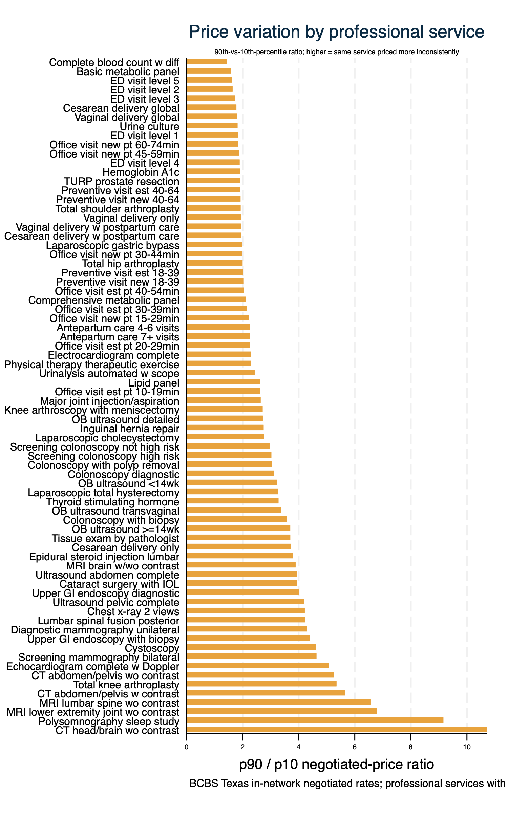
The ranking above shows WHICH services vary; this shows WHERE. For the six most price-dispersed professional services, each small panel is one service, with the median negotiated price in each of the 8 Public Health Regions. Bars of different lengths within a panel mean the same service is priced differently across Texas — a concrete map of where the dispersion lives.
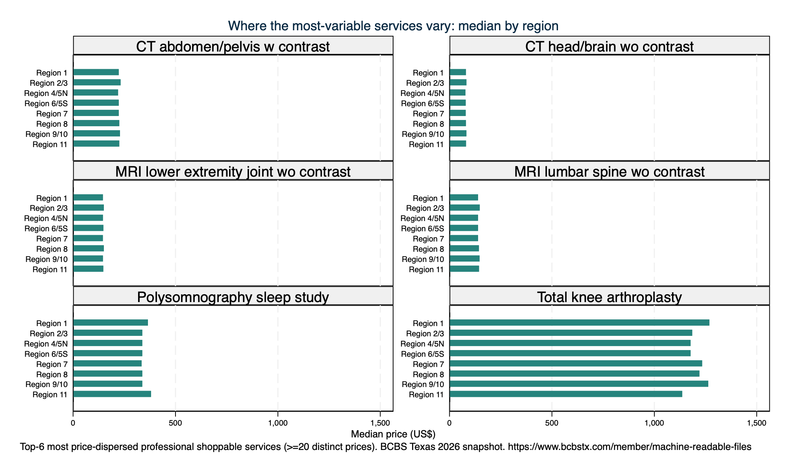
The per-service price summary as a searchable, sortable table, built with the team's statashiny (Bootstrap 5 + DataTables) and embedded below. Click a column header to sort; type in the box to filter. Read every figure with the ghost-rate caveat (see the box above).
The ranking and the searchable table say WHICH services vary and WHAT they cost. This widget lets the policy team slice the comparable prices on demand: the bars show the median negotiated price by service category, and the dropdown filters re-draw it live for any combination of provider type (professional vs facility), BCBS Texas network, Public Health Region, and coverage segment (fully-insured / self-funded). Why run it: most follow-up questions in a briefing are '…but what about in MY region / network / segment?' — this answers them without a new Stata run, and the built-in stats panel (N, median, spread) updates with every filter. A range slider on the number of provider groups behind each price lets you focus on widely-shared prices — a rough way to down-weight rarely-used ghost rates. Example: pick Region 7 and compare imaging medians across networks, then slide up the minimum provider count. (On a representative ~40k-row sample of the comparable fee-for-service prices; full data in 02_cleaned/. Read with the ghost-rate caveat above.)
Distribution of negotiated prices for headline shoppable services, echoing Texas 2036's childbirth and knee-arthroscopy examples. Median with the min and max, then a box plot.
. tabstat negotiated_amount, by(service_label) statistics(p50 min max n) format(%9.0fc) nototal Summary for variables: negotiated_amount Group variable: service_label (Texas 2036 short label for the procedure (our menu)) service_label | p50 Min Max N -----------------+---------------------------------------- Cataract surgery | 492 144 3,589 10,694 Colonoscopy diag | 267 108 2,089 25,240 Knee arthroscopy | 528 156 3,348 11,529 MRI lumbar spine | 144 31 1,950 25,938 Office visit est | 85 43 627 38,555 Vaginal delivery | 2,136 1,439 14,737 9,122 ----------------------------------------------------------
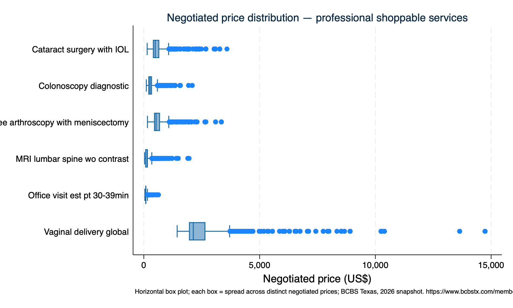
. tabstat negotiated_amount, by(service_label) statistics(p50 min max n) format(%9.0fc) nototal Summary for variables: negotiated_amount Group variable: service_label (Texas 2036 short label for the procedure (our menu)) service_label | p50 Min Max N -----------------+---------------------------------------- Cesarean deliver | 4,032 101 83,546 1,681 Heart failure & | 13,748 4,024 94,514 1,583 Major hip/knee j | 20,784 6,439 156,625 1,534 Septicemia wo MV | 19,751 5,552 142,127 1,532 Total hip arthro | 12,540 814 99,442 3,558 Total knee arthr | 13,160 814 99,442 3,549 ----------------------------------------------------------
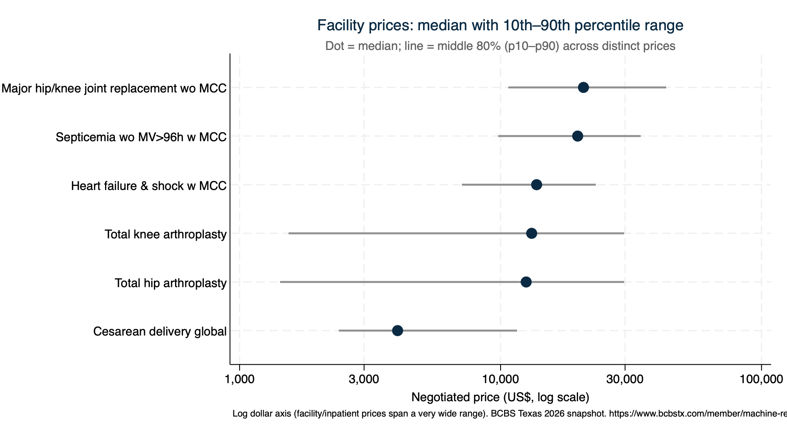
For procedures billed under BOTH a professional and an institutional rate, the median price and the dispersion (CV) of each. Field evidence: facility prices are higher and far more dispersed than professional. (This is the feasible "site of care" lens; a within-payer office-vs-HOPD split is NOT separable — see 400.)
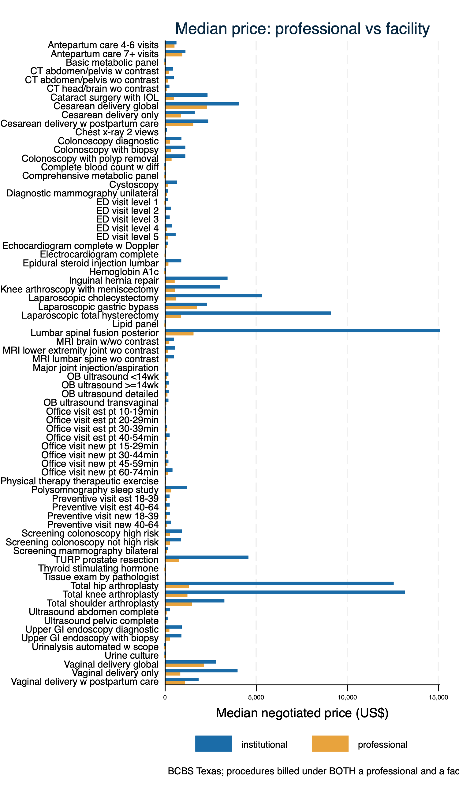
. di as txt "Coefficient of variation, professional vs facility (selected):" Coefficient of variation, professional vs facility (selected): . table service_label provider_type, statistic(mean cv) nformat(%5.2f) --------------------------------------------------------------------------------------------------------------------- | Professional (clinician) / institutional (facility) / both | institutional professional Total ----------------------------------------------------+---------------------------------------------------------------- Texas 2036 short label for the procedure (our menu) | Antepartum care 4-6 visits | 1.44 0.43 0.94 Antepartum care 7+ visits | 1.13 0.42 0.78 Basic metabolic panel | 1.01 0.32 0.66 CT abdomen/pelvis w contrast | 1.05 0.78 0.92 CT abdomen/pelvis wo contrast | 0.99 0.82 0.90 CT head/brain wo contrast | 0.99 1.18 1.08 Cataract surgery with IOL | 0.66 0.66 0.66 Cesarean delivery global | 1.39 0.48 0.93 Cesarean delivery only | 1.34 0.56 0.95 Cesarean delivery w postpartum care | 1.39 0.44 0.92 Chest x-ray 2 views | 0.78 0.75 0.77 Colonoscopy diagnostic | 0.68 0.53 0.60 Colonoscopy with biopsy | 0.66 0.59 0.63 Colonoscopy with polyp removal | 0.67 0.55 0.61 Complete blood count w diff | 0.97 0.28 0.63 Comprehensive metabolic panel | 0.96 0.85 0.91 Cystoscopy | 1.04 0.66 0.85 Diagnostic mammography unilateral | 0.65 0.79 0.72 ED visit level 1 | 1.03 0.87 0.95 ED visit level 2 | 1.48 0.51 0.99 ED visit level 3 | 1.60 0.49 1.05 ED visit level 4 | 1.92 0.52 1.22 ED visit level 5 | 1.21 0.50 0.86 Echocardiogram complete w Doppler | 0.87 0.72 0.79 Electrocardiogram complete | 0.77 0.50 0.63 Epidural steroid injection lumbar | 0.69 0.58 0.64 Hemoglobin A1c | 0.86 0.40 0.63 Inguinal hernia repair | 0.68 0.50 0.59 Knee arthroscopy with meniscectomy | 0.68 0.51 0.60 Laparoscopic cholecystectomy | 0.68 0.51 0.60 Laparoscopic gastric bypass | 1.42 0.47 0.95 Laparoscopic total hysterectomy | 0.72 0.54 0.63 Lipid panel | 0.87 0.48 0.67 Lumbar spinal fusion posterior | 0.68 0.56 0.62 MRI brain w/wo contrast | 0.86 0.84 0.85 MRI lower extremity joint wo contrast | 0.83 0.95 0.89 MRI lumbar spine wo contrast | 0.80 0.89 0.85 Major joint injection/aspiration | 3.34 0.50 1.92 OB ultrasound <14wk | 0.62 0.71 0.67 OB ultrasound >=14wk | 0.59 0.75 0.67 OB ultrasound detailed | 0.62 0.65 0.63 OB ultrasound transvaginal | 0.74 0.73 0.74 Office visit est pt 10-19min | 0.88 0.52 0.70 Office visit est pt 20-29min | 0.80 0.48 0.64 Office visit est pt 30-39min | 0.78 0.46 0.62 Office visit est pt 40-54min | 0.62 0.46 0.54 Office visit new pt 15-29min | 0.80 0.54 0.67 Office visit new pt 30-44min | 0.64 0.48 0.56 Office visit new pt 45-59min | 0.78 0.48 0.63 Office visit new pt 60-74min | 0.60 0.45 0.53 Physical therapy therapeutic exercise | 0.83 0.62 0.73 Polysomnography sleep study | 0.62 0.87 0.74 Preventive visit est 18-39 | 0.53 0.48 0.51 Preventive visit est 40-64 | 0.58 0.48 0.53 Preventive visit new 18-39 | 0.51 0.49 0.50 Preventive visit new 40-64 | 0.55 0.48 0.51 Screening colonoscopy high risk | 0.69 0.55 0.62 Screening colonoscopy not high risk | 0.68 0.43 0.56 Screening mammography bilateral | 0.66 0.79 0.72 TURP prostate resection | 0.69 0.48 0.59 Thyroid stimulating hormone | 0.83 0.51 0.67 Tissue exam by pathologist | 0.83 1.00 0.91 Total hip arthroplasty | 0.85 0.49 0.67 Total knee arthroplasty | 0.80 0.62 0.71 Total shoulder arthroplasty | 1.35 0.47 0.91 Ultrasound abdomen complete | 0.65 0.77 0.71 Ultrasound pelvic complete | 0.81 0.80 0.81 Upper GI endoscopy diagnostic | 0.68 0.58 0.63 Upper GI endoscopy with biopsy | 0.70 0.63 0.66 Urinalysis automated w scope | 1.32 0.43 0.87 Urine culture | 0.95 0.37 0.66 Vaginal delivery global | 1.47 0.47 0.97 Vaginal delivery only | 0.55 0.46 0.51 Vaginal delivery w postpartum care | 1.38 0.46 0.92 Total | 0.92 0.59 0.75 ---------------------------------------------------------------------------------------------------------------------
Whether the same service is priced differently across BCBSTX's Texas networks and between coverage segments. Texas 2036 wants payer/plan-level comparison; payer MRFs supply it natively (hospital MRFs do not).
. di as txt "Colonoscopy (45378), professional — median by network:" Colonoscopy (45378), professional — median by network: . tabstat negotiated_amount, by(network_name) statistics(p50 min max n) format(%9.0fc) nototal Summary for variables: negotiated_amount Group variable: network_name (Provider network the price applies to (e.g., Blue Choice PPO)) network_name | p50 Min Max N -----------------+---------------------------------------- Blue Advantage H | 239 108 1,934 3,527 Blue Choice PPO | 275 121 2,089 3,722 Blue Choice PPO | 275 121 2,089 3,719 Blue Choice PPO | 236 147 437 29 Blue Essentials | 271 121 2,089 3,667 Blue Essentials | 271 121 2,089 3,662 Blue Essentials | 229 164 566 20 Blue Essentials | 229 164 566 20 Blue Premier | 271 129 2,089 2,031 MyBlue Health HM | 238 108 1,934 1,691 ParPlan | 275 129 2,089 3,152 ---------------------------------------------------------- . di as txt _n "By coverage segment:" By coverage segment: . tabstat negotiated_amount, by(market_segment) statistics(p50 n) format(%9.0fc) nototal Summary for variables: negotiated_amount Group variable: market_segment (Coverage segment served (fully-insured / self-funded / both)) market_segment | p50 N ---------------+-------------------- both | 267 14,068 fully-insured | 256 7,424 self-funded | 275 3,748 ------------------------------------
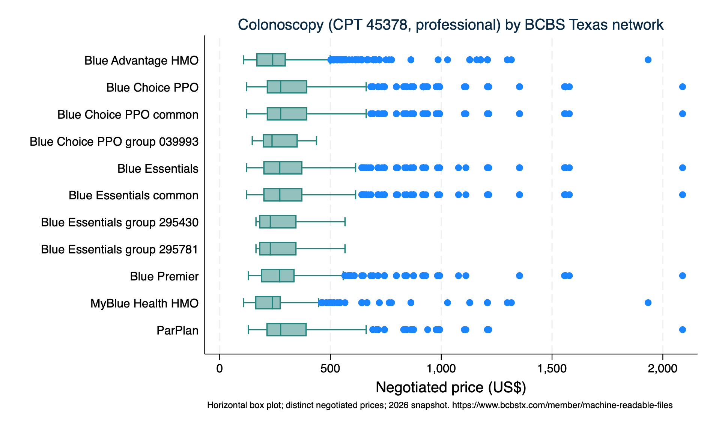
Each negotiated price divided by the national Medicare allowed amount for the same service (Medicare = 100%). This standardizes for how resource-intensive a service is and gives one interpretable yardstick. Benchmark by how the service is billed: professional -> Medicare Physician Fee Schedule; outpatient facility -> Hospital Outpatient PPS; inpatient -> Inpatient PPS (MS-DRG weight x base). National figures, all geographic indices = 1.0 (first-pass simplification). NOTE this is the negotiated PRICE relative to Medicare, NOT spending.
. di as txt "Prices with a Medicare benchmark match: `nmatch' of `ntot'" Prices with a Medicare benchmark match: 1437200 of 1728270 . di as txt _n "Median % of Medicare (100 = Medicare), with p25/p75, by service category and provider type:" Median % of Medicare (100 = Medicare), with p25/p75, by service category and provider type: . frame _pom: list service_category provider_type median p25 p75 n, noobs sep(0) abbreviate(24) +--------------------------------------------------------------------+ | service_category provider_type median p25 p75 n | |--------------------------------------------------------------------| | Cardiology institutional 27 24 64 3735 | | Cardiology professional 80 46 115 39238 | | E&M outpatient professional 64 51 78 303518 | | Emergency institutional 127 85 375 17216 | | Emergency professional 87 78 99 80788 | | Imaging institutional 155 96 365 28406 | | Imaging professional 72 28 86 259052 | | Inpatient DRG institutional 146 102 199 20259 | | Inpatient surgery institutional 85 53 135 29191 | | Inpatient surgery professional 109 88 141 97077 | | Lab institutional 102 84 279 3833 | | Lab professional 47 27 56 11906 | | Maternity institutional 130 85 242 11369 | | Maternity professional 83 61 107 182247 | | Maternity DRG institutional 130 92 186 5570 | | Outpatient procedure institutional 90 63 148 39295 | | Outpatient procedure professional 72 46 101 257501 | | Preventive institutional 94 69 149 7009 | | Preventive professional 69 48 87 39990 | +--------------------------------------------------------------------+
Same idea applied to the Medicare benchmark: bars show the median price as a percent of Medicare (100 = Medicare) by service category, with a reference line at 100, re-drawn live as you filter by provider type and Public Health Region. Why run it: the headline pattern (professional below, facility above Medicare) hides category- and region-level exceptions — this surfaces them, e.g. 'which services run above Medicare for facilities in Region 6/5S?' The bars use the median (robust to the ghost-rate skew; see 5b). (Representative ~40k-row sample.)
Where a Medicare benchmark exists, we flag prices below 25% of Medicare as likely ghost/placeholder rates and show how the median moves when they are excluded. This makes the ghost-rate distortion visible; it is a rough heuristic, not the taxonomy-based gold standard (see the guide).
. count if likely_ghost 63,017 . di as txt "Prices flagged implausibly low (<25% of Medicare): `r(N)'" Prices flagged implausibly low (<25% of Medicare): 63017 . preserve . keep if provider_type=="professional" & !missing(pct_of_medicare) (456,953 observations deleted) . di as txt "Professional % of Medicare — median including ALL prices:" Professional % of Medicare — median including ALL prices: . summarize pct_of_medicare, detail Negotiated price as % of Medicare (100 = Medicare) ------------------------------------------------------------- Percentiles Smallest 1% 20.75083 7.492949 5% 25.6207 7.492949 10% 30.09686 9.162832 Obs 1,271,317 25% 48.24082 9.162832 Sum of wgt. 1,271,317 50% 75.30528 Mean 81.04896 Largest Std. dev. 55.67103 75% 95.03719 1220.084 90% 131.2908 1267.011 Variance 3099.263 95% 159.2426 1267.011 Skewness 4.167001 99% 321.1187 1267.011 Kurtosis 35.72982 . local m_all = r(p50) . di as txt "Professional % of Medicare — median EXCLUDING likely-ghost prices:" Professional % of Medicare — median EXCLUDING likely-ghost prices: . summarize pct_of_medicare if !likely_ghost, detail Negotiated price as % of Medicare (100 = Medicare) ------------------------------------------------------------- Percentiles Smallest 1% 25.90058 25.00083 5% 29.21877 25.00083 10% 34.30012 25.00396 Obs 1,215,914 25% 52.82027 25.00396 Sum of wgt. 1,215,914 50% 76.87997 Mean 83.75688 Largest Std. dev. 55.42285 75% 96.96527 1220.084 90% 133.3009 1267.011 Variance 3071.693 95% 160.8513 1267.011 Skewness 4.325711 99% 326.5134 1267.011 Kurtosis 37.11026 . di as txt _n " median % of Medicare: all = " %4.0f `m_all' "% vs ex-ghost = " %4.0f r(p50) "%" median % of Medicare: all = 75% vs ex-ghost = 77% . di as txt " (the gap is the rough size of the ghost-rate drag on the professional figure)" (the gap is the rough size of the ghost-rate drag on the professional figure) . restore
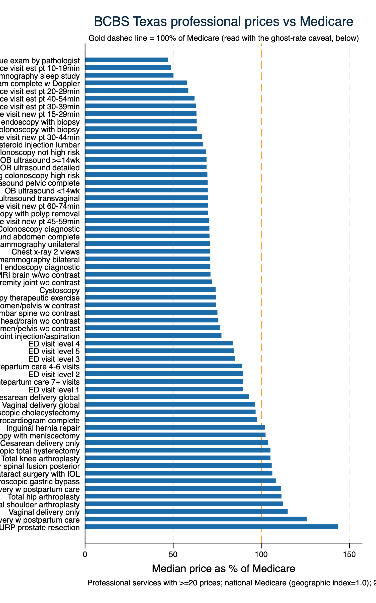
Each price is tagged with the county (and its DSHS Public Health Region) of the provider group's practice location (NPPES practice ZIP -> county -> region). Prices with no county/region (provider registered out of state, unmapped ZIP, or a TIN-only group with no resolvable NPI) are excluded from this section.
. preserve . keep if procedure_code=="45378" & provider_type=="professional" (1,689,483 observations deleted) . tabstat negotiated_amount, by(region_id) statistics(p50 p10 p90 n) format(%9.0f) nototal Summary for variables: negotiated_amount Group variable: region_id region_id | p50 p10 p90 N ------------+---------------------------------------- Region 1 | 273 149 502 2052 Region 2/3 | 272 152 493 5695 Region 4/5N | 268 149 501 2929 Region 6/5S | 262 149 450 3440 Region 7 | 272 149 493 4062 Region 8 | 246 149 399 3036 Region 9/10 | 267 149 493 2035 Region 11 | 234 149 388 1723 ----------------------------------------------------- . restore
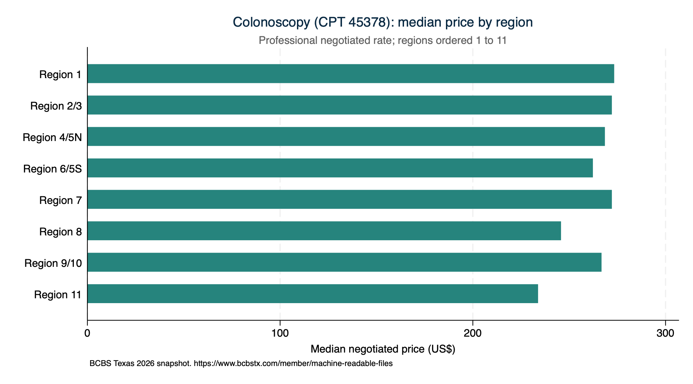
Median negotiated price for an established-patient office visit (CPT 99214, professional) by county. Counties with fewer than 5 distinct prices are left unshaded. Built with spmap on the Census county shapefile (see 03_mapping/).
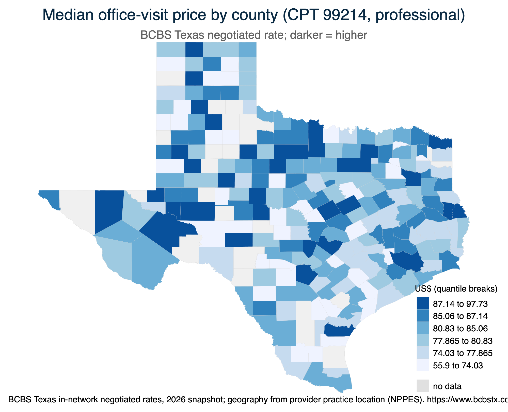
The same metric collapsed to the 8 DSHS Public Health Regions (each county shaded by its region's median), the Texas 2036 signature geographic cut.
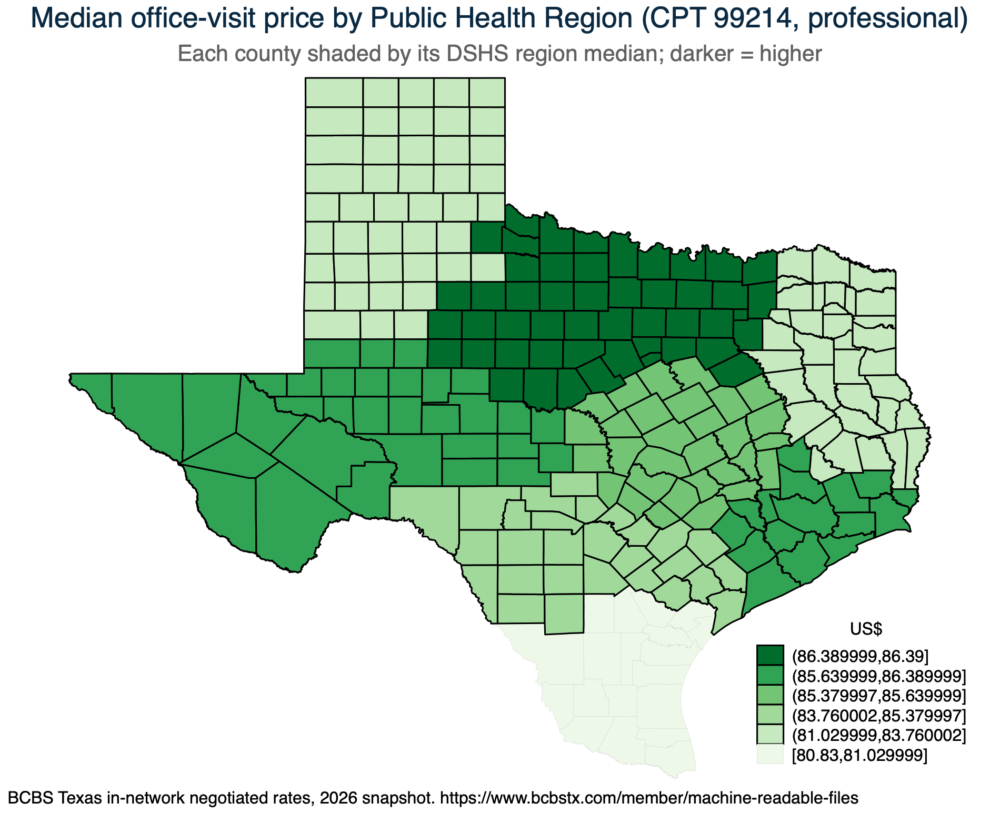
Median office-visit price (CPT 99214, professional) by Texas State Senate and House district. IMPORTANT — this is APPROXIMATE: published prices are keyed to COUNTY, and districts cross county lines, so we assign each provider its county median, then average within district (weighted by how many of the district's providers sit in each county). An exact version needs a district-keyed re-extraction of the raw files. Read it for broad geographic patterns, not precise district figures.
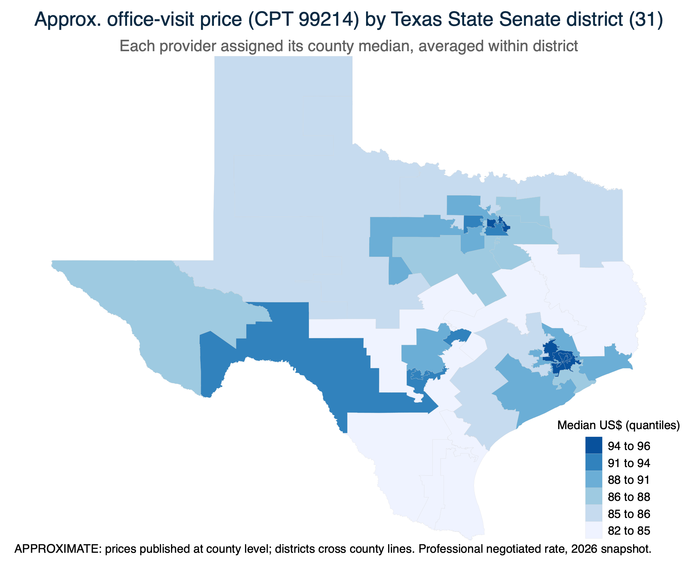
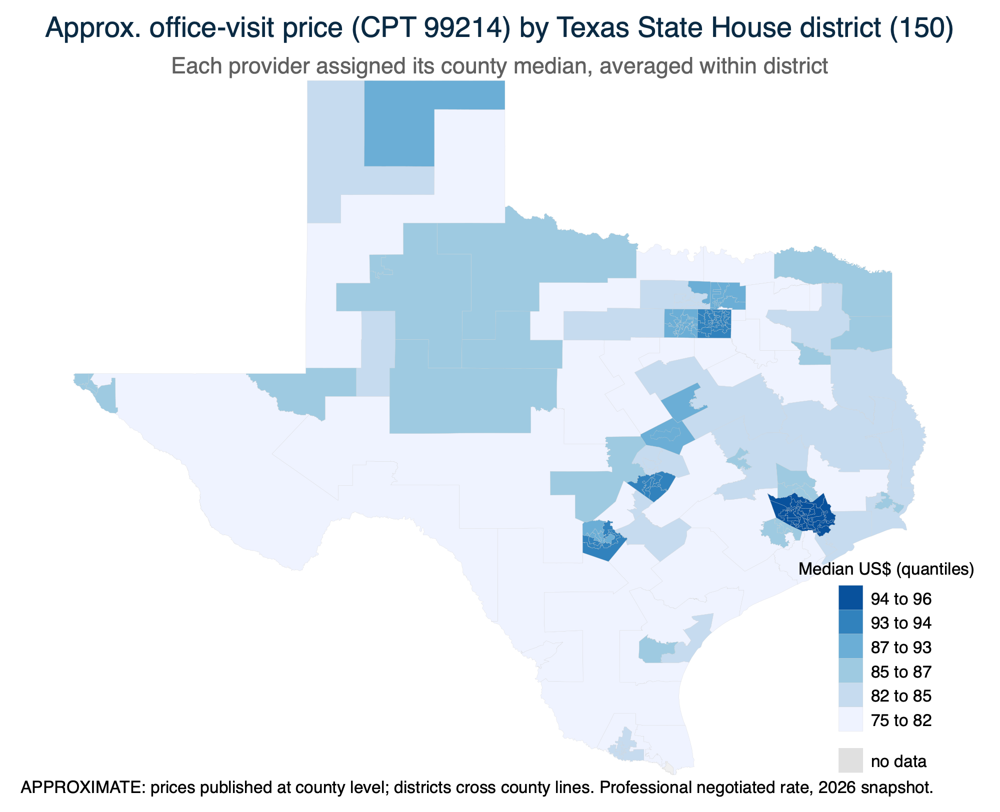
Count of Texas provider NPIs (from the NPPES registry) whose practice location falls inside each of the 31 Texas State Senate districts, assigned by point-in-polygon geocoding of the provider ZIP. This shows where providers are concentrated. IMPORTANT: this is provider SUPPLY (a count), not price. The approximate district PRICE map is above; an EXACT price-by-district map would need a district-keyed re-extraction, since the price table is keyed on county, not district.
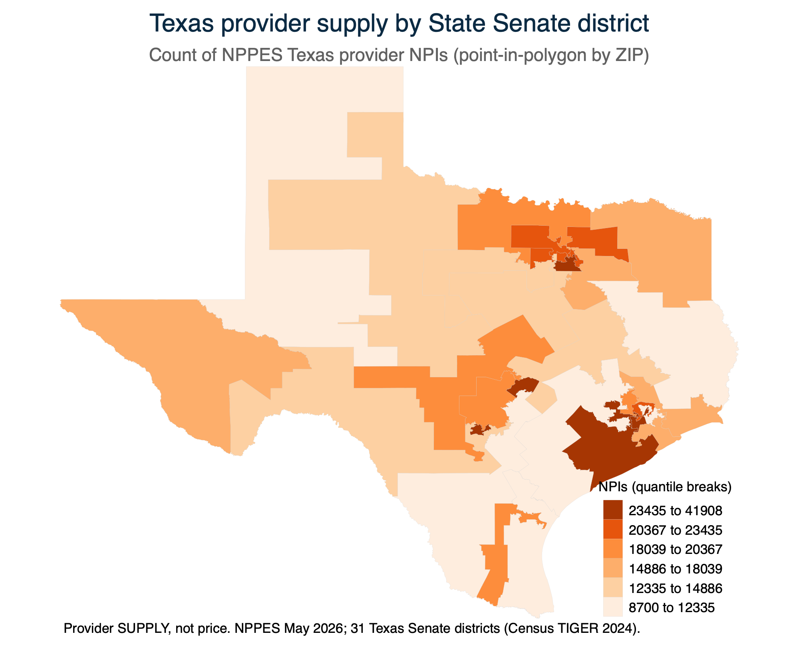
The finest geography we map. Each Texas ZIP code is one point (its Census 2020 ZCTA centroid), shaded by the number of NPPES provider NPIs practicing there. Like the district map this is provider SUPPLY (a count), NOT price: prices are collapsed at the county level, so there is no ZIP-level price to map without a ZIP-keyed re-extraction. The metros (Dallas–Fort Worth, Houston, San Antonio, Austin, El Paso, the Rio Grande Valley) light up as expected.
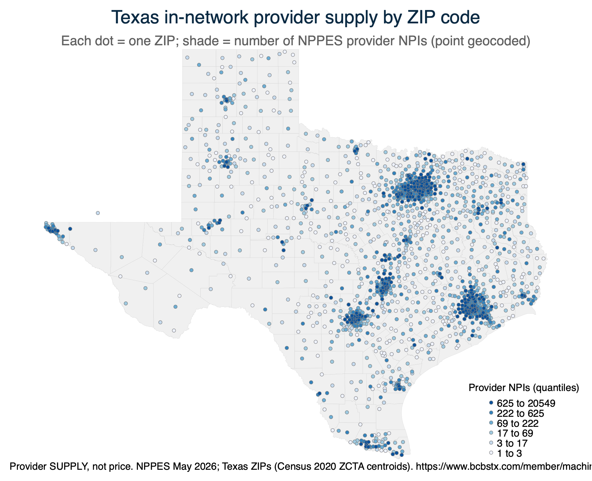
From the separate Rx table: brand vs generic price levels, the dispensing-fee distribution, and same-NDC price dispersion across the pharmacy network.
. di as txt "Negotiated drug price by type (brand vs generic):" Negotiated drug price by type (brand vs generic): . tabstat negotiated_rate, by(drug_type) statistics(p50 p90 mean n) format(%9.2fc) nototal Summary for variables: negotiated_rate Group variable: drug_type (Drug type (brand / generic / specialty)) drug_type | p50 p90 Mean N ----------+---------------------------------------- Brand | 20.29 1,538.58 36,367.97 686346.00 Generic | 0.36 9.24 11.69 507305.00 --------------------------------------------------- . di as txt _n "Dispensing fee distribution:" Dispensing fee distribution: . summarize dispensing_fee, detail Dispensing fee (US$) ------------------------------------------------------------- Percentiles Smallest 1% 0 0 5% 0 0 10% 0 0 Obs 1,193,651 25% 0 0 Sum of wgt. 1,193,651 50% .2 Mean .3063055 Largest Std. dev. .5723852 75% .35 3.75 90% .6 3.75 Variance .3276249 95% 1.5 3.75 Skewness 4.290039 99% 3.75 3.75 Kurtosis 24.50975
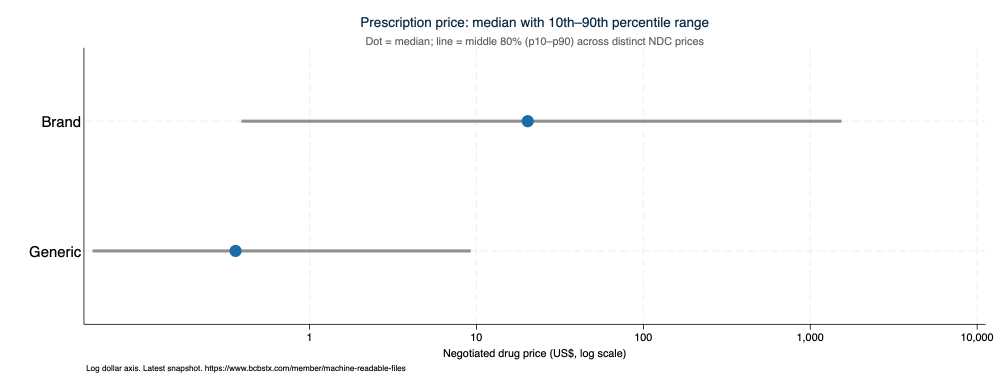
. di as txt _n "NDCs with the widest same-drug price spread (max/min), n-prices>=10:"
NDCs with the widest same-drug price spread (max/min), n-prices>=10:
. list drug_name ndc rxmin rxmax rxspread if _one & _np>=10 in 1/`=min(_N,12)', noobs sep(0) abbreviate(24) +----------------------------------------------------+ | drug_name ndc rxmin rxmax rxspread | |----------------------------------------------------| | ISONIAZID 00555006602 .01 2.18 218 | +----------------------------------------------------+
Whether disclosure compresses the price distribution over time (Turquoise convergence method: percent change by price quartile across monthly snapshots). With a single snapshot this is intentionally skipped.
This is our standing, plain-English scorecard: for each standard price-transparency analysis, can we do it with the data we have right now? The status column is one of three things:
The last column (unlock_or_note) gives the specific next step or caveat for each row. The table is also written to 03_output/feasibility_matrix.csv so it travels with the data.
| Analysis | Status | Unlock / note |
|---|---|---|
| Price dispersion (shoppable services) | Feasible now | core analysis; this run |
| Professional vs facility decomposition | Feasible now | this run |
| Cross-network / fully-insured vs self-funded | Feasible now | this run |
| Rx brand-vs-generic, dispensing fees | Feasible now | this run |
| Site-of-care: office (POS11) vs HOPD (POS22) | Not separable | BCBSTX prof rate spans a POS set; use prof-vs-facility instead |
| Commercial-to-Medicare ratio (RAND-style) | Feasible now | MPFS/OPPS/IPPS joined, national GPCI=1.0; this run (labs lack a CLFS amount) |
| Geographic variation (county / region) | Feasible now | NPPES ZIP->county->region; county + Public Health Region price maps this run |
| Price by legislative district | Feasible now | APPROX (county->district) done this run; EXACT needs a district-keyed re-extraction |
| Provider supply by district / ZIP | Feasible now | Senate-district and ZIP point-supply maps this run |
| Cross-payer benchmarking | Needs addition | run UHC/Aetna/Cigna through the same pipeline (new payer config) |
| Time trends / price convergence | Needs >=2 snapshots | stack future monthly pulls, then re-run |
| Volume-weighted spending / utilization | Not feasible | MRFs carry no volume (inherent limitation) |
| Market concentration (HHI) vs price | Not feasible | needs clean hospital identity (CCN) + volume-based market shares |
| Price vs quality value scatter | Needs addition | join CMS Hospital Compare star ratings |
Two expansions were ADDED in this run and now appear above: the Medicare benchmark (section 5) and Public Health Region geography (section 6). The items below remain future opportunities; the first is highest-leverage.